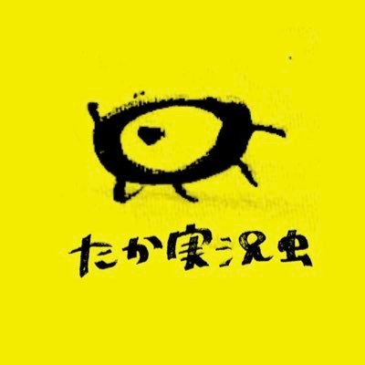

いつも、たか実況虫を応援いただき、誠にありがとうございます。
皆さまにご報告がございます。
たか実況虫は、2026年9月20日をもちまして誕生日を迎えました。
今後の活動について本人とも協議を重ねました結果、引き続き、心赴くままに活動を継続することとなりました。
なお、卒業の予定はございません。
TLでも現地でも、見かけた際には生暖かく見守っていただけますと幸いです。
これからのたか実況虫も、何卒よろしくお願いいたします。
2026年9月20日
たか実況虫運営事務局
たか実況虫運営事務局

いつも、たか実況虫を応援いただき、誠にありがとうございます。
皆さまにご報告がございます。
今後の活動について本人とも協議を重ねました結果、引き続き、心赴くままに活動を継続することとなりました。
TLでも現地でも、見かけた際には生暖かく見守っていただけますと幸いです。
これからのたか実況虫も、何卒よろしくお願いいたします。